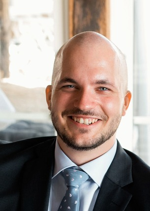
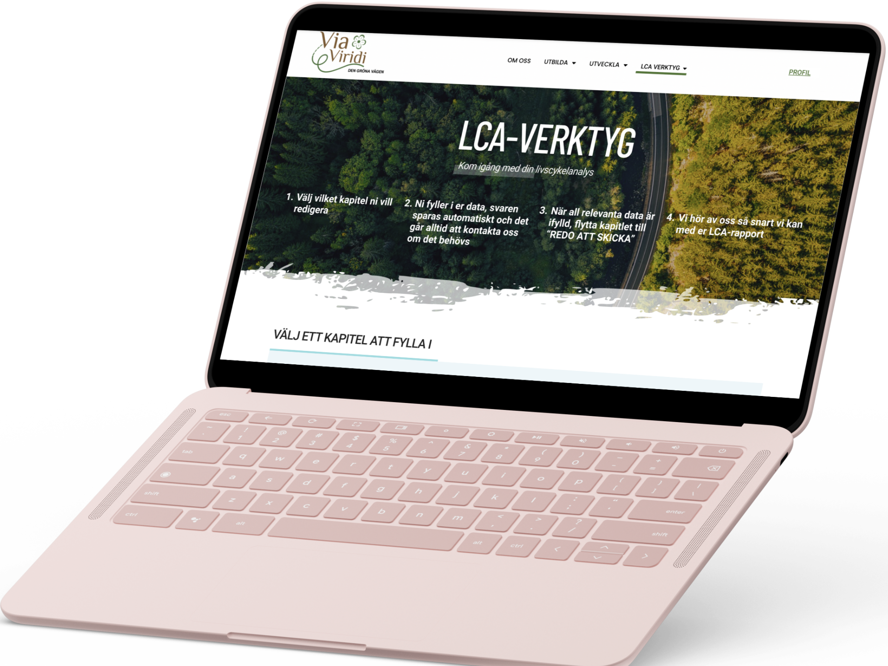

UX/UI Designer & Service Designer
Johan Lorentz
I take ideas from research to tested prototypes — working end to end across interviews, flows, interfaces, and testing.

About
I'm drawn to user-centered design and service innovation — projects that pair research rigor with a willingness to imagine differently. My work spans solo and collaborative projects, shaped by both utopian and dystopian thinking to challenge assumptions and open up new perspectives.
- Skilled in UX, interaction design, and creative research
- Experienced in both team-based and independent projects
- Driven by curiosity, iteration, and purposeful design
This portfolio is a selection of that work — if something resonates, I'd love to connect.
Work

Projekt Grötvik
Sustainable tourism and mobility in a Swedish coastal village.
Read the case study →Active8 Planet
A speculative training game for sustainability in mobility.
Read the case study →
ViaViridi LCA Tool
Making Life Cycle Assessment accessible for construction clients.
Read the case study →Contact
- Email johan.lorentz@gmail.com
- Phone 0736872647
- LinkedIn linkedin.com/in/johan-lorentz
- Address Stallknektsvägen 17, Helsingborg, Sweden